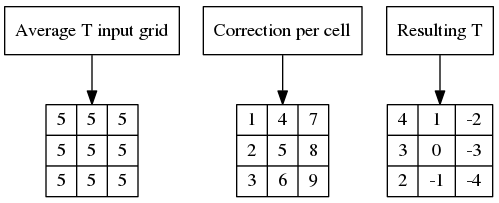

The soil part of wflow_sbm model follows the same concepts as the topog_sbm model. topog_sbm is specifically designed to similate fast runoff processes in small catchments while wflow_sbm can be applied more widely. The main differences are:
The sections below describe the working of the model in more detail.
The _sbm concept has been developed for small catchments and relatively thin soils. In addition, the numerical solution of the soil water flow is a simple explicit scheme and the lateral groundwater flow follows topography rather than true hydraulic head. As such, the following limitation apply:
The wflow_sbm model assumes the input to be potential eveporation. In many case the evaporation will be a refercen evaporation fro a different land cover. In that case you can use the et_reftopot.tbl file to set the mutiplication per landuse to go from the supplied evaporation to the potential evaporation for each land cover. By default al is set to 1.0 assuming the eveaporation to be potential.
The wflow_sbm model uses the same snow routine as the wflow_hbv model.
The analytical model of rainfall interception is based on Rutter’s numerical model . The simplifications that introduced allow the model to be applied on a daily basis, although a storm-based approach will yield better results in situations with more than one storm per day . The amount of water needed to completely saturate the canopy is defined as:
P'=\frac{-\overline{R}S}{\overline{E}_{w}}ln\left[1-\frac{\overline{E}_{w}}{\overline{R}}(1-p-p_{t})^{-1}\right]
where \overline{R} is the average precipitation intensity on a saturated canopy and \overline{E}_{w} the average evaporation from the wet canopy and with the vegetation parameters S, p and p_t as defined previously. The model uses a series of expressions to calculate the interception loss during different phases of a storm. An analytical integration of the total evaporation and rainfall under saturated canopy conditions is then done for each storm to determine average values of \overline{E}_{w} and \overline{R}. The total evaporation from the canopy ( the total interception loss) is calculated as the sum of the components listed in the table below. Interception losses from the stems are calculated for days with P\geq S_{t}/p_{t} . p_t and S_t are small and neglected in the wflow_sbm model.
Table: Formulation of the components of interception loss according to Gash:
| For m small storms (P_{g}<{P'}_{g}) | (1-p-p_{t})\sum_{j=1}^{m}P_{g,j} | ||
| Wetting up the canopy in n large storms (P_{g}\geq{P'}_{g}) | n(1-p-p_{t}){P'}_{g}-nS | ||
| Evaporation from saturated canopy during rainfall | \overline{E}/\overline{R}\sum_{j=1}^{n}(P_{g,j}-{P'}_{g}) | ||
| Evaporation after rainfall ceases for n large storms | nS | ||
| Evaporation from trunks in q storms that fill the trunk storage | qS_{t} | ||
| Evaporation from trunks in (m+n-q) storms that do not fill the trunk storage | p_{t}\sum_{j=1}^{m+n-q}P_{g,j} | ||
In applying the analytical model, saturated conditions are assumed to occur when the hourly rainfall exceeds a certain threshold. Often a threshold of 0.5 mm/hr is used . \overline{R} is calculated for all hours when the rainfall exceeds the threshold to give an estimate of the mean rainfall rate onto a saturated canopy.
Gash (1979) has shown that in a regression of interception loss on rainfall (on a storm basis) the regression coefficient should equal to \overline{E}_w/\overline{R}. Assuming that neither \overline{E}_w nor \overline{R} vary considerably in time, \overline{E}_w can be estimated in this way from \overline{R} in the absence of above-canopy climatic observations . Values derived in this way generally tend to be (much) higher than those calculated with the penman-montieth equation .
For subdaily timesteps the model uses a simplification of the Rutter model. The simplyfied model is solved explicitly and does not take drainage from the canopy into account.
def rainfall_interception_modrut(Precipitation,PotEvap,CanopyStorage,CanopyGapFraction,Cmax):
"""
Interception according to a modified Rutter model. The model is solved
explicitly and there is no drainage below Cmax.
Returns:
- NetInterception: P - TF - SF (may be different from the actual wet canopy evaporation)
- ThroughFall:
- StemFlow:
- LeftOver: Amount of potential eveporation not used
- Interception: Actual wet canopy evaporation in this thimestep
- CanopyStorage: Canopy storage at the end of the timestep
"""
##########################################################################
# Interception according to a modified Rutter model with hourly timesteps#
##########################################################################
p = CanopyGapFraction
pt = 0.1 * p
# Amount of P that falls on the canopy
Pfrac = (1 - p -pt) * Precipitation
# S cannot be larger than Cmax, no gravity drainage below that
DD = ifthenelse (CanopyStorage > Cmax , Cmax - CanopyStorage , 0.0)
self.CanopyStorage = CanopyStorage - DD
# Add the precipitation that falls on the canopy to the store
CanopyStorage = CanopyStorage + Pfrac
# Now do the Evap, make sure the store does not get negative
dC = -1 * min(CanopyStorage, PotEvap)
CanopyStorage = CanopyStorage + dC
LeftOver = PotEvap +dC; # Amount of evap not used
# Now drain the canopy storage again if needed...
D = ifthenelse (CanopyStorage > Cmax , CanopyStorage - Cmax , 0.0)
CanopyStorage = CanopyStorage - D
# Calculate throughfall
ThroughFall = DD + D + p * Precipitation
StemFlow = Precipitation * pt
# Calculate interception, this is NET Interception
NetInterception = Precipitation - ThroughFall - StemFlow
Interception = -dC
return NetInterception, ThroughFall, StemFlow, LeftOver, Interception, CanopyStorage
If the surface is (partly) saturated the rainfall that falls onto the saturated area is added to the surface runoff component. Infiltration of the remaining water is determined as follows:
First the soil infiltration capacity is adjusted in case the soil is frozen. The remaining storage capacity of the unsaturated store is determined. The infiltrating water is split is two parts, the part that fall on compacted areas and the part that fall on non-compacted areas. First the amount of water that infiltrates in non-compacted areas is calculated by taking the mimimum of the remaining storage capacity, the maximum soil infiltration rate and the water on non-compacted areas. After adding the infiltrated water to the unsaturated store the same is done for the compacted areas after updating the remaining storage capacity.
A detailed description of the SBM model has been given by [vertessy]. Briefly: the soil is considered as a bucket with a certain depth (z_{t}), divided into a saturated store (S) and an unsaturated store (U), the magnitudes of which are expressed in units of depth. The top of the S store forms a pseudo-water table at depth z_{i} such that the value of S at any time is given by:
S=(z_{t}-z_{i})(\theta_{s}-\theta_{r})
where:
\theta_{s} and \theta_{r} are the saturated and residual soil water contents, respectively.
The unsaturated store (U) is subdivided into storage (U_{s}) and deficit (U_{d}) which are again expressed in units of depth:
U_{d}=(\theta_{s}-\theta_{r})z_{i}-U U_{s}=U-U_{d}
The saturation deficit (S_{d}) for the soil profile as a whole is defined as:
S_{d}=(\theta_{s}-\theta_{r})z_{t}-S
All infiltrating rainfall enters the U store first. The transfer of water from the U store to the S store (st) is controlled by the saturated hydraulic conductivity {} at depth z_{i} and the ratio between U and S_{d}:
st=K_{\mathit{sat}}\frac{U_{s}}{S_{d}}
Hence, as the saturation deficit becomes smaller, the rate of the transfer between the U and S stores increases.

Schematisation of the soil within the wflow_sbm model
Saturated conductivity (K_{sat}) declines with soil depth (z) in the model according to:
where:
K_{0} is the saturated conductivity at the soil surface and
f is a scaling parameter [m^{-1}]
The scaling parameter f is defined by:
f=\frac{\theta_{s}-\theta_{r}}{M}
with \theta_{s} and \theta_{r} as defined previously and M representing a model parameter (expressed in meters).
Figure: Plot of the relation between depth and conductivity for different values of M
(Source code, png, hires.png, pdf)

The S store can be drained laterally via subsurface flow according to:
sf=K_{0}\mathit{tan}(\beta)e^{-S_{d}/M}
where:
\beta is element slope angle [deg.]
sf is the calculated subsurface flow [m^{2}d^{-1}]
S_{d} is the saturation deficit defined as: ((\theta_{s}-\theta_{r})z_{t}-S)
with M and S_{d} as defined previously. A schematic representation of the various hydrological processes and pathways modelled by SBM (infiltration, exfiltration, Hortonian and saturation overland flow, subsurface flow) is provided by verstessy (1999).
The original SBM model does not include transpiration or a notion of capilary rise. In wflow_sbm transpiration is first taken from the S store if the roots reach the water table z_{i}. If the S store cannot satisfy the demand the U store is used next. First the number of wet roots is determined (going from 1 to 0) using an sigmoid function as follows:
WetRoots = 1.0/(1.0 + e^{-SharpNess (WaterTable - RootingDepth)})
Here the sharpness parameter (by default a large negative value, -80000.0) parameter determines if there is a stepwise output or a more gradual output (default is stepwise). WaterTable is the level of the Water table in the gridcell in mm below the surface, RootingDepth is the maximum depth of the roots also in mm below the surface. For all values of WaterTable smaller that RootingDepth a value of 1 is returned if they are equal a value of 0.5 is returned if the WaterTable is larger than the RootingDepth a value of 0 is returned. The returned WetRoots fraction is multiplied by the potential evaporation (and limited by the available water in saturated zone) to get the transpiration from the saturated part of the soil.
Figure: Plot showing the fraction of wet roots for different values of c for a RootingDepth of 275mm
(Source code, png, hires.png, pdf)

Next the remaining potential evaporation is used to extract water from the unsaturated store:
FirstZoneDepth = FirstZoneDepth - ActEvapSat
RestPotEvap = PotTrans - ActEvapSat
# now try unsat store
AvailCap = min(1.0,max (0.0,(WTable - RootingDepth)/(RootingDepth + 1.0)))
MaxExtr = AvailCap * UStoreDepth
ActEvapUStore = min(MaxExtr,RestPotEvap,UStoreDepth)
UStoreDepth = UStoreDepth - ActEvapUStore
ActEvap = ActEvapSat + ActEvapUStore
Remaining evaporative demand is used to for evaporation of open water. This amount is subtracted from the water that would otherwise enter the kinematic wave.
Capilary rise is determined using the following approach: first the K_{sat} is determined at the water table z_{i}; next a potential capilary rise is determined from the minimum of the K_{sat}, the actual transpiration taken from the U store, the available water in the S store and the deficit of the U store. Finally the potential rise is scaled using the distance between the roots and the water table using:
CS=CSF/(CSF+z_{i}-RT)
in which CS is the scaling factor to multiply the potential rise with, CSF is a model parameter (default = 100, use CapScale.tbl to set differently) and RT the rooting depth. If the roots reach the water table (RT>z_{i}) CS is set to zero thus setting the capilary rise to zero.
If the parameter MaxPercolation is set > 0 this is used to transfer water from the bottom of the FirstZone to a HBV-type groundwater reservoir (LowerZone). The K4 parameter is used to set the recession rate of the lower zone.
Alternatively a MaxLeage parameter may be set > 0. In that case the water is lost from the FirstZone and not transferred to the LowerZone.
The near surface soil temperature is modelled using a simple equation [Wigmosta]:
T_s^{t} = T_s^{t-1} + w (T_a - T_s^{t-1})
where T_s^{t} is the near-surface soil temperature at time t, T_a is air temperature and w is a weighting coefficient determined through calibration (default is 0.1125 for daily timesteps, 0.9 for 3-hourly timesteps)
if T_s < 0 than a K_{sat} reduction factor (default 0.038) is applied. An S-curve (see plot below) is used to make a smooth transition (a c-factor of 8 is used).
(Source code, png, hires.png, pdf)
Sub-grid runoff generaten can be switched on on off in the configuration file. In general this feature is used if the grid cell size is relatively larger compared to the variation of topography. In addition you will need to have information on the distribution of altitude within a grid-cell. Depending on the topography sub-grid runoff generation may be useful around 1x1km and larger.
The basis is formed by a sigmoid (S) function that is fitted using a 10, 50 and 90 percentile DEM. The S function is defined as:
S = 1.0/(b + e^{(-c (X - a))})
Where:
X = input variable (in this case the absolute scaled groundwater level)
b = 1.0
c = sharpness parameter. Higher values give sharper step
a = centre-point of the curve (normally the 50% DEM)
The c parameter is estimated by reversing the function above to:
c = log(1.0/p - 1)/(dem_{p} - dem_{50})
where:
percentile is the percentile of dem_{p}
dem_{50} is the average altitude in the gridcell
dem_{p} is the altitude below with percentile (p) cells of the dem are found
The outcome of the S will range from 0 to 1 for inputs ranging from the minimum altitude to the maximum altitude (within the gridcell). Thereore, the calculated groundwater levels within the cell are scale to match the minimum and maximum altitude within the cell using:
G_s = (A_{max}-A_{min})/FZT/GWPerc
where:
G_s is the scaling factor
A_{max} the maximum altitude within the cell
A_{min} the minumum altitude within the cell
FZT the total thickness of the soil in the model
GWperc is a dimensionless parameter (from >0 to 1) that determines which part of the soil profile generates runoff. If it is 1 runoff is generated whenever there is groundwater in the system. If it is 0.1 only the top 10 % of the soil profile generated runoff
self.DemMax=readmap(self.Dir + "/staticmaps/wflow_demmax")
self.DrainageBase=readmap(self.Dir + "/staticmaps/wflow_demmin")
self.CC = min(100.0,-log(1.0/0.1 - 1)/min(-0.1,self.DrainageBase - self.Altitude))
self.GWScale = (self.DemMax-self.DrainageBase)/self.FirstZoneThickness / self.RunoffGeneratingGWPerc
Note
at present the model uses the drainage base (minimum DEM) and treats this as the 10% percentile to which the curve is fitted. So at present only two points are used (10 % and 50%)
Warning
This is an poorly tested feature
In the dynamic section of the model the absolute groundwater level is determined and scaled before it is fed into the S curve function. The result is a estimated saturated fraction within a the gridcell. The saturated fraction is used to generated Saturation Overland Flow (SOF) and generate ouflow from the groundwater reservoir:
in dynamic:
self.AbsoluteGW=self.DemMax-(self.zi*self.GWScale)
self.SubCellFrac = sCurve(self.AbsoluteGW,c=self.CC,a=self.Altitude+1.0)
self.SubCellRunoff = self.SubCellFrac * FreeWaterDepth
self.SubCellGWRunoff = min(self.SubCellFrac * self.FirstZoneDepth,\
self.SubCellFrac * self.Slope * self.FirstZoneKsatVer * \
exp(-self.f * self.zi) * self.timestepsecs/self.basetimestep)
self.FirstZoneDepth=self.FirstZoneDepth-self.SubCellGWRunoff
FreeWaterDepth = FreeWaterDepth - self.SubCellRunoff
The river width is determined from the DEM the upstream area and yearly average discharge ([Finnegan]):
The early average Q at outlet is scaled for each point in the drainage network with the upstream area. \alpha ranges from 5 to > 60. Here 5 is used for hardrock, largre values are used for sediments
Implementation:
upstr = catchmenttotal(1, self.TopoLdd)
Qscale = upstr/mapmaximum(upstr) * Qmax
W = (alf * (alf + 2.0)**(0.6666666667))**(0.375) * Qscale**(0.375) *\
(max(0.0001,windowaverage(self.Slope,celllength() * 4.0)))**(-0.1875) *\
self.N **(0.375)
RiverWidth = W
The table below list commonly used Manning’s N values (in the N_River .tbl file). Please note that the values for non river cells may arguably be set significantly higher. (Use N.tbl for non-river cells and N_River.tbl for river cells)
| Type of Channel and Description | Minimum | Normal | Maximum |
|---|---|---|---|
| Main Channels | |||
| clean, straight, full stage, no rifts or deep pools | 0.025 | 0.03 | 0.033 |
| same as above, but more stones and weeds | 0.03 | 0.035 | 0.04 |
| clean, winding, some pools and shoals | 0.033 | 0.04 | 0.045 |
| same as above, but some weeds and stones | 0.035 | 0.045 | 0.05 |
| same as above, lower stages, more ineffective slopes and sections | 0.04 | 0.048 | 0.055 |
| same as second with more stones | 0.045 | 0.05 | 0.06 |
| sluggish reaches, weedy, deep pools | 0.05 | 0.07 | 0.08 |
| very weedy reaches, deep pools, or floodways with heavy stand of timber and underbrush | 0.075 | 0.1 | 0.15 |
| Mountain streams | |||
| bottom: gravels, cobbles, and few boulders | 0.03 | 0.04 | 0.05 |
| bottom: cobbles with large boulders | 0.04 | 0.05 | 0.07 |
Normally the the kinematic wave is continuous throughout the model. By using the the SubCatchFlowOnly entry in the model section of the ini file all flow is at the subcatchment only and no flow is transferred from one subcatchment to another. This can be handy when connecting the result of the model to a water allocation model such as Ribasim.
Example:
[model]
SubCatchFlowOnly = 1
Warning
As of version 0.93 this is moved to the wflow_wave module.
An experimental implementation of the full dynamic wave equations has been implemented. The current implementation is fairly unstable and very slow. It can be switched on by setting dynamicwave=1 in the [dynamicwave] section of the ini file. See below for an example:
[dynamicwave]
# Switch on dynamic wave for main rivers
dynamicwave=1
# Number of timeslices per dynamic wave substep
TsliceDyn=100
# number of substeps for the dynamic wave with respect to the model timesteps
dynsubsteps=24
# map with level boundary points
wflow_hboun = staticmaps/wflow_outlet.map
# Optional river map for the dynamic wave that must be the same size or smaller as that of the
# kinematic wave
wflow_dynriver = staticmaps/wflow_dynriver.map
# a fixed water level for each non-zero point in the wflow_hboun map
# level > 0.0 use that level
# level == 0.0 use supplied timeseries (see levelTss)
# level < 0.0 use upstream water level
fixedLevel = 3.0
# if this is set the program will try to keep the volume at the pits at
# a constant value
lowerflowbound = 1
# instead of a fixed level a tss file with levels for each timesteps and each
# non-zero value in the wflow_hboun map
#levelTss=intss/Hboun.tss
# If set to 1 the program will try to optimise the timestep
# Experimental, mintimestep is the smallest to be used
#AdaptiveTimeStepping = 1
#mintimestep =1.0
A description of the implementation of the dynamicwave is given on the pcraster website.
In addition to the settings in the ini file you need to give the model additional maps or lookuptables:
The following variables for the dynamicwave function are set as follows:
Becuase the dynamic wave can be unstable priming the model with new initial conditions is best done in several steps:
The diagram below shows the stores and fluxes in the model in terms of internal variable names. It onlys shows the soil and Kinematic wave reservoir, not the canopy model.
![digraph grids {
compound=true;
node[shape=record];
UStoreDepth [shape=box];
OutSide [style=dotted];
FirstZoneDepth [shape=box];
UStoreDepth -> FirstZoneDepth [label="Transfer [mm]"];
FirstZoneDepth -> UStoreDepth [label="CapFlux [mm]"];
FirstZoneDepth ->KinematicWaveStore [label="ExfiltWaterCubic [m^3/s]"];
"OutSide" -> UStoreDepth [label="ActInfilt [mm]"];
UStoreDepth -> OutSide [label="ActEvapUStore [mm]"];
FirstZoneDepth -> OutSide [label="ActEvap-ActEvapUStore [mm]"];
FirstZoneDepth -> KinematicWaveStore [label="SubCellGWRunoffCubic [m^3/s]"];
"OutSide" -> KinematicWaveStore [label="SubCellRunoffCubic [m^3/s]"];
"OutSide" -> KinematicWaveStore [label="RunoffOpenWater [m^3/s]"] ;
"OutSide" -> KinematicWaveStore [label="FreeWaterDepthCubic [m^3/s]"] ;
}](_images/graphviz-e5ec7992f1213e7eae816d6610041254d14f0520.png)
Although the model has been setup to do as little data processing as possible it includes an option to apply an altitude correction to the temperature inputs. The three squares below demonstrate the principle.

wflow_sbm takes the correction grid as input and applies this to the input temperature. The correction grid has to be made outside of the model. The correction grid is optional.
Note
The temperature correction map is specified in the model section of the ini file:
[model] TemperatureCorrectionMap=NameOfTheMap
If the entry is not in the file the correction will not be applied
The tables below shows the most important parameters and suggested ranges
CanopyGapFraction file:///media/schelle/BIG/LINUX/wflow/cases/maas/intbl/Cfmax.tbl
FirstZoneKsatVer.tbl
file:///media/schelle/BIG/LINUX/wflow/cases/maas/intbl/FirstZoneMinCapacity.tbl
file:///media/schelle/BIG/LINUX/wflow/cases/maas/intbl/InfiltCapPath.tbl
file:///media/schelle/BIG/LINUX/wflow/cases/maas/intbl/InfiltCapSoil.tbl
file:///media/schelle/BIG/LINUX/wflow/cases/maas/intbl/M.tbl
file:///media/schelle/BIG/LINUX/wflow/cases/maas/intbl/MaxCanopyStorage.tbl
file:///media/schelle/BIG/LINUX/wflow/cases/maas/intbl/MaxLeakage.tbl
file:///media/schelle/BIG/LINUX/wflow/cases/maas/intbl/N_River.tbl
file:///media/schelle/BIG/LINUX/wflow/cases/maas/intbl/N.tbl
file:///media/schelle/BIG/LINUX/wflow/cases/maas/intbl/RootingDepth.tbl
file:///media/schelle/BIG/LINUX/wflow/cases/maas/intbl/RunoffGeneratingGWPerc.tbl
file:///media/schelle/BIG/LINUX/wflow/cases/maas/intbl/thetaR.tbl
file:///media/schelle/BIG/LINUX/wflow/cases/maas/intbl/thetaS.tbl
file:///media/schelle/BIG/LINUX/wflow/cases/maas/intbl/TT.tbl
file:///media/schelle/BIG/LINUX/wflow/cases/maas/intbl/TTI.tbl
file:///media/schelle/BIG/LINUX/wflow/cases/maas/intbl/WHC.tbl
| [vertessy] | Vertessy, R.A. and H. Elsenbeer, “Distributed modelling of storm flow generation in an Amazonian rainforest catchment: effects of model parameterization,” Water Resources Research, vol. 35, no. 7, pp. 2173–2187, 1999. |
| [Finnegan] | Noah J. Finnegan et al 2005 Controls on the channel width of rivers: Implications for modeling fluvial incision of bedrock” |
| [Wigmosta] | Wigmosta, M. S., L. J. Lane, J. D. Tagestad, and A. M. Coleman (2009), Hydrologic and erosion models to assess land use and management practices affecting soil erosion, Journal of Hydrologic Engineering, 14(1), 27-41. |
{kind=link}
{kind=link}
{kind=link}
{kind=link}
{kind=link}
{kind=link}